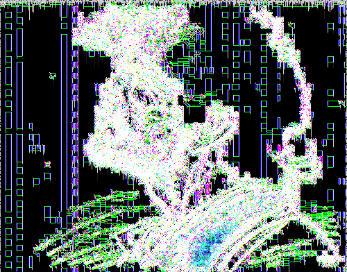
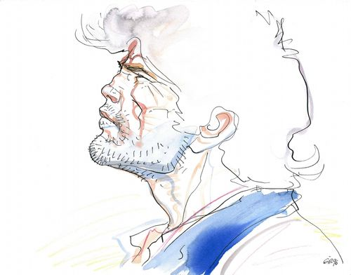

An experiment in Processing. I created an army of "ant" agents that walked along the pixels of an image and left behind trails. They decided where to move and turn based on the colors in the pixels of the image that they were walking on.
